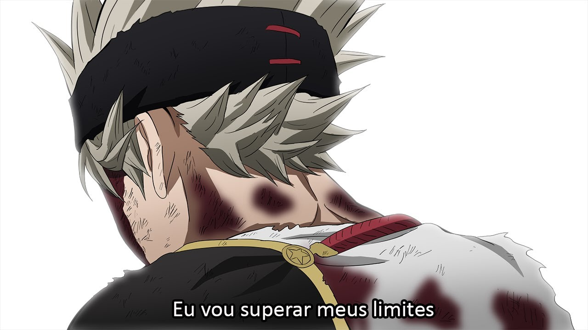
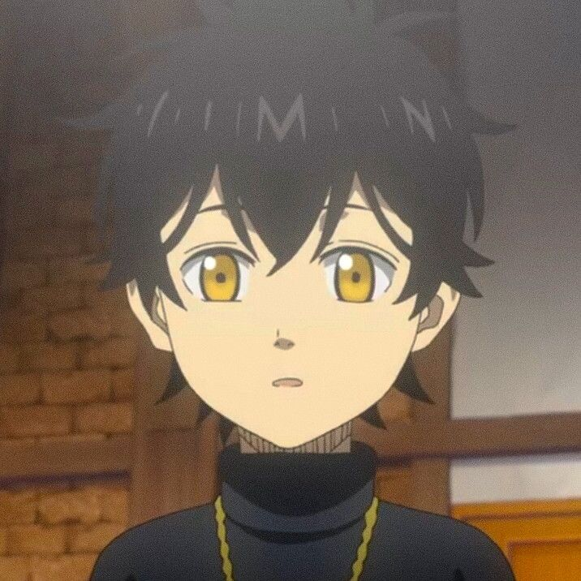
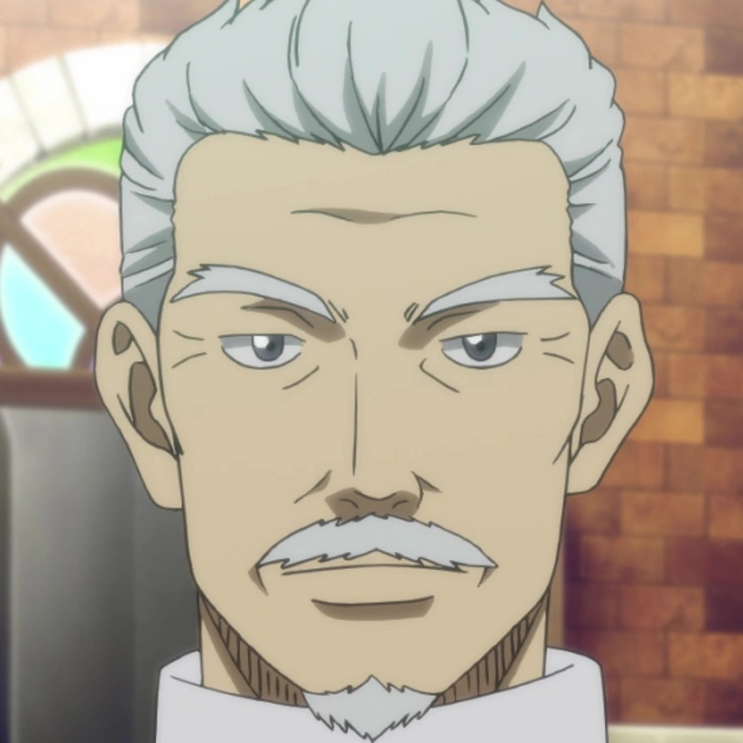
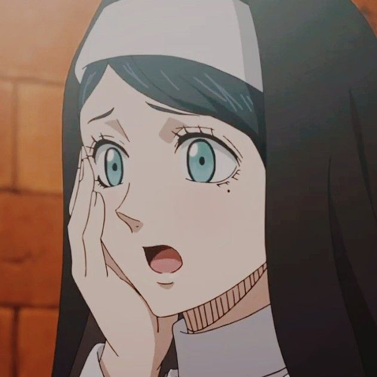
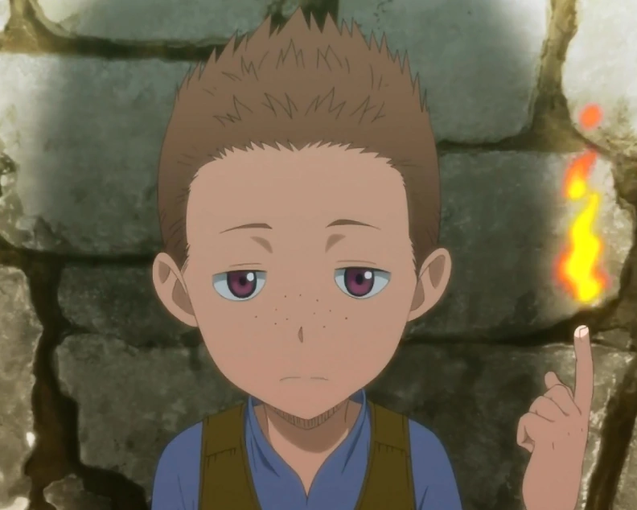
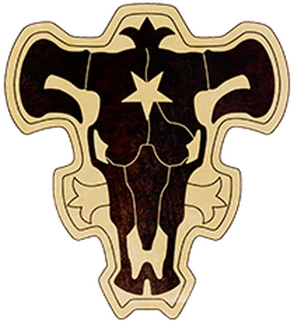
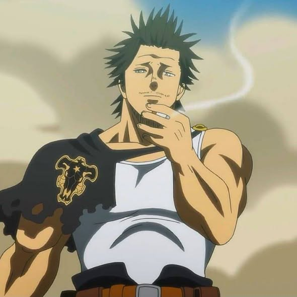
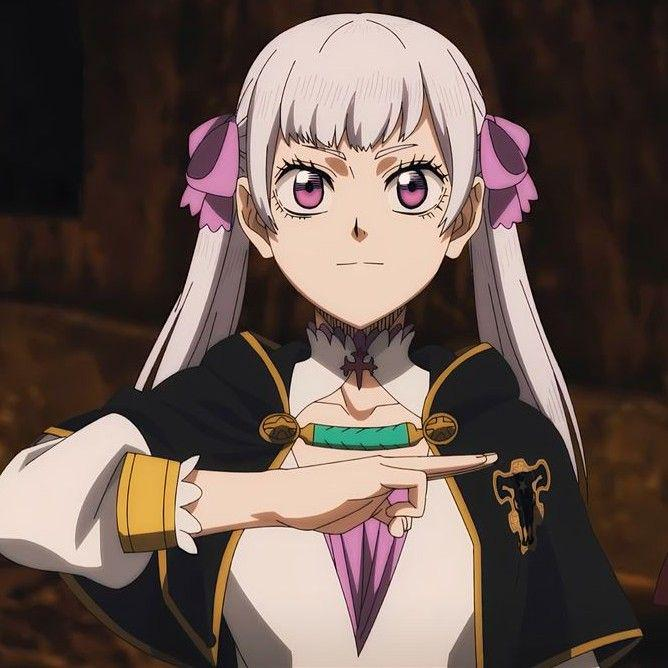
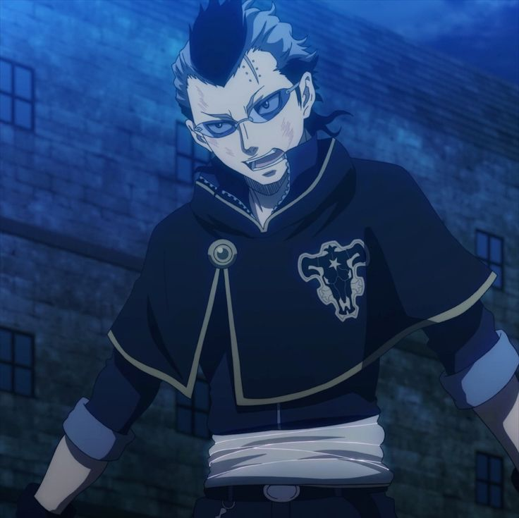
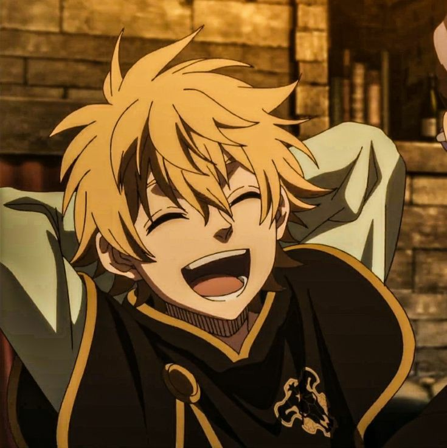

BLACK COVER
ASTA
Conheça a história do personagem que nasceu sem magia, mas que através de determinação busca se tornar o Rei Mago.

Conheça a história do personagem que nasceu sem magia, mas que através de determinação busca se tornar o Rei Mago.

Asta nasceu em um mundo onde a magia define absolutamente tudo: o status social, as oportunidades e até o valor de uma pessoa dentro da sociedade. Desde cedo, fica claro que ele é completamente diferente dos outros, pois não possui nenhuma quantidade de mana — algo extremamente raro e visto como uma grande desvantagem. Enquanto todos ao seu redor conseguem usar magia naturalmente, Asta cresce enfrentando dificuldades, sendo subestimado e até ridicularizado por não ter esse poder essencial. Apesar disso, ele não aceita esse destino imposto. Em vez de desistir, Asta decide que vai provar que pode alcançar o topo mesmo sem magia. Com uma determinação fora do comum, ele passa a treinar intensamente o próprio corpo, desenvolvendo uma força física impressionante, resistência e disciplina que o destacam de qualquer outra pessoa. Sua personalidade barulhenta e cheia de energia também reflete sua vontade de nunca recuar diante dos desafios.
Criado em um orfanato ao lado de Yuno, seu rival e melhor amigo, Asta cresce em um ambiente simples, mas cheio de desafios. Desde pequenos, os dois compartilham o mesmo sonho de se tornar o Rei Mago, porém trilham caminhos muito diferentes para alcançá-lo. Enquanto Yuno demonstra um talento natural extraordinário para a magia, sendo reconhecido como um prodígio desde cedo, Asta precisa lidar com o fato de não possuir nenhum poder mágico, o que intensifica ainda mais a rivalidade entre eles. Essa diferença não afasta os dois — pelo contrário, fortalece uma competição saudável e constante. Asta vê em Yuno um parâmetro do quão alto ele precisa chegar, enquanto Yuno, mesmo sendo naturalmente mais forte, reconhece o esforço e a determinação de Asta. Essa dinâmica de rivalidade é essencial para o crescimento de ambos, pois um impulsiona o outro a nunca se acomodar.
A trajetória de Asta, do anime Black Clover, destaca-se como um exemplo de superação,
especialmente pela forma como o personagem evolui por meio do trabalho contínuo, mesmo
diante de limitações significativas.
Dessa forma, a narrativa vai além de um simples contexto teórico, assumindo também a função
de transmitir uma mensagem inspiradora. A trajetória de Asta, presente em Black Clover,
evidencia que a persistência e a determinação podem ser fatores decisivos para alcançar
objetivos, servindo como motivação para diferentes pessoas em seus próprios desafios.
Ao destacar a importância do esforço contínuo e da superação de limitações, essa história
reforça a ideia de que o desenvolvimento pessoal está diretamente ligado à prática, à
disciplina e à capacidade de enfrentar dificuldades, mostrando que resultados são
construídos ao longo do tempo por meio da dedicação.

"Não importa o quão talentoso você seja, não importa o quão forte você seja... se você desistir, não vai conseguir nada!" — Asta








